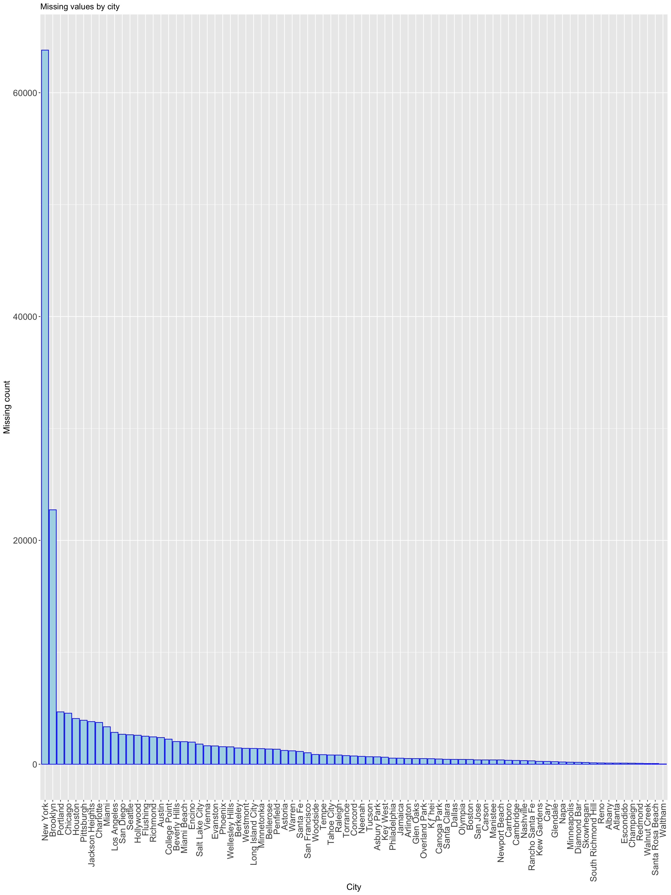

Chapter 4 Missing values
4.1 Reason(s) Behind Analysing Missing Values
In order to make informed decisions with the data, we had to first understand what parts of the data were missing in order to handle the data appropriately. We decided to conduct an analysis of missing data in the Datafiniti dataset to understand what variables we were able to utilize to answer our questions concerning vegan/vegetarian restaurants. It is important to understand the overall structural nature of the data to get an idea what portion and how much of the data is missing, and how much is present.
4.2 Visual representation of missing values in dataset

For this dataset we were able to find out that 38.3% of the overall data are missing while 61.7% are present. Based on our results it appears that most of the data present have some association with location, address, region, menus, cuisines. Most of the data missing appear to be associated with the restaurant hours of operation, dress attire, and other restaurant business features.
The number of missing values in every column are listed as follows:
## descriptions.dateSeen descriptions.sourceURLs descriptions.value
## 10000 10000 10000
## features.key features.value hours.day
## 10000 10000 10000
## hours.dept hours.hour languagesSpoken
## 10000 10000 10000
## isClosed yearOpened sic
## 9963 9909 9860
## claimed facebookPageURL twitter
## 9311 9063 8042
## paymentTypes menus.description imageURLs
## 6127 6013 4866
## menus.category priceRangeCurrency priceRangeMin
## 4070 3673 3673
## priceRangeMax websites menus.currency
## 3673 1817 53
## id dateAdded dateUpdated
## 0 0 0
## address categories primaryCategories
## 0 0 0
## city country cuisines
## 0 0 0
## keys latitude longitude
## 0 0 0
## menuPageURL menus.amountMax menus.amountMin
## 0 0 0
## menus.dateSeen menus.name menus.sourceURLs
## 0 0 0
## name phones postalCode
## 0 0 0
## province sourceURLs
## 0 04.3 Missing data for every city

We examined missing data by city, and interestingly enough, the majority of the missing data counts are those from New York City. Observations from Brooklyn have the second highest number of missing data.
4.4 Analysis of missing data by row count and percentage
4.4.1 Analysis of missing data by row count.

4.4.2 Analysis of missing data by percentage.
 Based on the resulting maps of missing data, we can note there may be a possibility of there being correlations between the first 9 variables listed on the map, as these variables all seem to have missing data within the same rows. 100% of the data within these rows also appear to be missing.The first missing data pattern displayed on the map accounts for just over 60% of the rows in the data. The second missing data pattern displayed on the map accounts for just over 35% of the rows of the data. There are no complete cases of no missing data within this dataset.
Based on the resulting maps of missing data, we can note there may be a possibility of there being correlations between the first 9 variables listed on the map, as these variables all seem to have missing data within the same rows. 100% of the data within these rows also appear to be missing.The first missing data pattern displayed on the map accounts for just over 60% of the rows in the data. The second missing data pattern displayed on the map accounts for just over 35% of the rows of the data. There are no complete cases of no missing data within this dataset.